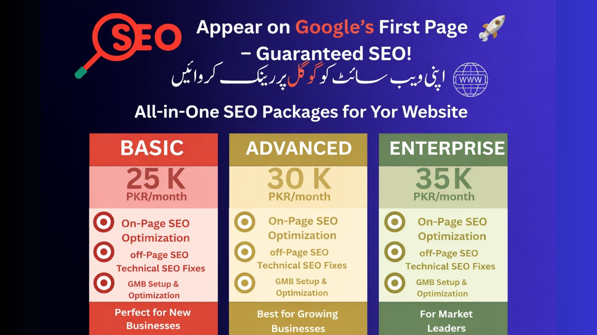

Bilal SEO Services provides affordable SEO services in Pakistan designed to help businesses dominate search engines. We are trusted local SEO experts in Pakistan helping small and medium businesses achieve consistent growth through data-driven strategies.
Get Free Strategy CallBilal SEO Services is a professional SEO agency in Pakistan focused on helping brands grow online visibility, organic traffic, and qualified leads. As a trusted SEO company for Pakistani businesses, we understand local market competition, search behavior, and algorithm updates. Our approach combines technical SEO, on-page optimization, authority link building, and content marketing to deliver sustainable rankings.
We specialize in small business SEO services Pakistan entrepreneurs rely on. Whether you are a startup, eCommerce store, local service provider, or corporate brand, our strategies are customized to your business goals. We believe SEO is not just about rankings — it is about revenue growth, brand trust, and long-term digital dominance.
Keyword mapping, meta optimization, schema markup, internal linking, and content improvements aligned with search intent.
Website audits, Core Web Vitals optimization, crawlability fixes, XML sitemap setup, indexing solutions, and speed optimization.
Google Business Profile optimization, local citations, geo-targeted content, and local ranking improvements.
High-quality backlink campaigns from authoritative domains to strengthen domain authority and trust signals.
Our SEO services in Pakistan are flexible and performance-driven. We provide affordable SEO services in Pakistan for startups and comprehensive packages for enterprises. Pricing depends on competition level, industry, and growth goals.
Parasite SEO is a powerful ranking method that leverages high-authority platforms to rank competitive keywords quickly. Our professional SEO agency in Pakistan uses ethical parasite SEO strategies to secure first-page visibility for competitive niches. This strategy works effectively for local services, affiliate projects, and high-competition industries.
SEO typically takes 3–6 months depending on competition, domain authority, and strategy execution.
Local SEO experts understand Pakistani market trends, competition, and search behavior patterns.
Yes, we provide SEO services tailored specifically for startups and small businesses.
Our data-driven approach, technical expertise, and ethical SEO methods differentiate us.
SEO provides long-term sustainable traffic compared to temporary paid campaigns.
Yes, we conduct advanced keyword research using competitive analysis tools.
We serve eCommerce, local services, healthcare, real estate, and corporate sectors.
No agency can guarantee rankings, but we follow proven strategies for consistent growth.
Technical SEO ensures search engines can crawl and index your website effectively.
Contact us for a free consultation and SEO audit tailored to your business.